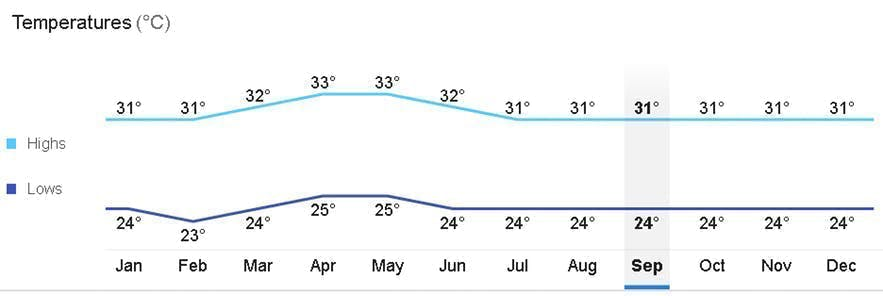

Exploring the top destinations in Palawan is possible if your schedule permits it, but it requires a well-prepared itinerary to make it possible. We recommend at least 8-10 days to pull this off. You can also choose to visit just one or two destinations in Palawan. Here’s a sample itinerary for Palawan that you can take inspiration from:
The majority of your activities in Palawan are highly dependent on the weather because they're located outdoors. That's why it's best to plan your trip around the dry months in the Philippines and check weather updates first to avoid canceled tours or rough currents, especially when doing island-hopping tours in Palawan
The best time to go to Palawan and its destinations is during the dry summer season, from November to May. The warmest months are from March to April, the summer season in the Philippines. Palawan tours, especially the underground river tour and island-hopping tours, are best maximized during these months.
However, this is also the peak season since most locals prefer to go to islands and beaches during this time. It is highly recommended to book your tours in advance during the summer season. You can even avail of private tours if you’re in a big group if you prefer the exclusivity.
You can expect a warm tropical climate almost all year round in Palawan, except in the rainy season, usually around July to September. The month with the most rainfall is during September. The warmest months are from March to April, with temperatures reaching 33°C. The month with the lowest degrees are from November to February with an average temperature of 23°C but is still dry.
The province of Palawan and its top destinations are accessible via land, sea, and air travel. Puerto Princesa is often the gateway to the province of Palawan since more flights are going here than to other airports. Your choice of entry point will affect your budget and itinerary, so it's best to look into which place best fits your preferences.

The easiest and most common way to go to Palawan is by riding a plane, with Puerto Princesa as the main jump-off. There are also flights going to El Nido, Coron, and San Vicente. However, more flights are going to Puerto Princesa, and it covers international flights aside from domestic.
Domestic andinternational flights to Puerto Princesa are available almost daily. If you're coming from Manila, the travel time is just over an hour. There are also flights from Clark (Pampanga), Iloilo, Cebu, and Davao going to Puerto Princesa.
It is the usual route of travelers who want to explore the main island of Palawan, which also includes El Nido and San Vicente/Port Barton, which you can reach by bus or van.
If you want to explore only or go to El Nido first, the fastest option from Manila is to fly directly to Lio Airport. AirSwift is currently the only airline that services this route with up to four flights per day. The travel time is around 1 hour and 20 minutes.
From Lio Airport, El Nido's Town Proper is easily accessible by land travel of 30 minutes. It is a quicker option than flying from Puerto Princesa then traveling by land to El Nido for 5-6 hours.
Coron is located on a separate group of islands above the main island of Palawan. You can go here by flying to Francisco B. Reyes Airport or Busuanga Airport for around 1 hour of travel time from Manila. Most major domestic airlines have daily flights going here from significant destinations like Manila, Clark (Pampanga), and Cebu.
From the airport, you can reach Coron's Town Proper by land travel of around half an hour. From Coron, you can reach El Nido by a 4-hour ferry. From El Nido, you can explore Puerto Princesa and San Vicente/Port Barton by land travel.
A newer entry point to Palawan is the emerging tourist destination called San Vicente/Port Barton, located between Puerto Princesa and El Nido. From Manila (1 hour) or Clark (Pampanga) (1.5 hours), you can directly fly to San Vicente airport. From San Vicente, you can also explore Puerto Princesa and El Nido by land travel.

Since it's an island, Palawan is also accessible by ferry rides from Manila. It is, however, more extended in travel time. Your entry point is Puerto Princesa. 2Go Travel has trips for this route every Tuesday and Friday, with a travel time of almost a day.
There are different types of accommodations on board available, so make sure to book in advance if possible to have the most comfortable long travel by sea.